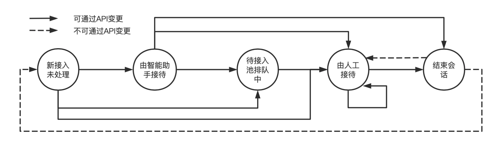

目录
从微信用户发起咨询到会话结束，该次会话可能会经过以下几个状态流转。企业或第三方可使用API获取和变更会话状态，以实现对会话的分配管理。变更会话状态时，只能从当前状态，变更成另一些特定的状态，具体如下：

| ID | 状态 | 说明 |
|---|---|---|
| 0 | 未处理 | 新会话接入（客户发消息咨询）。可选择：1.直接用API自动回复消息。2.放进待接入池等待接待人员接待。3.指定接待人员（接待人员须处于“正在接待”中，下同）进行接待 |
| 1 | 由智能助手接待 | 可使用API回复消息。可选择转入待接入池或者指定接待人员处理。 |
| 2 | 待接入池排队中 | 在待接入池中排队等待接待人员接入。可选择转为指定人员接待 |
| 3 | 由人工接待 | 人工接待中。可选择转接给其他接待人员处理或者结束会话。 |
| 4 | 已结束/未开始 | 会话已经结束或未开始（客户进入会话，还没上行消息）。不允许通过API变更会话状态，客户发消息咨询后会话状态变为“未处理”。接待人员通过客户端在已结束会话中成功发送消息后，会话状态变为“由人工接待”，此时会产生会话状态变更回调事件（4-重新接入已结束/已转接会话）。 |
注：一个微信用户向一个客服账号发起咨询后，在48h内，或主动结束会话前（包括接待人员手动结束，或企业通过API结束会话），都算是一次会话。
请求方式: POST(HTTPS)
请求地址: https://qyapi.weixin.qq.com/cgi-bin/kf/service_state/get?access_token=ACCESS_TOKEN
请求实例:
{ "open_kfid": "wkxxxxxxxxxxxxxxxxxx", "external_userid": "wmxxxxxxxxxxxxxxxxxx" }点击复制
参数说明：
| 参数 | 是否必须 | 说明 |
|---|---|---|
| access_token | 是 | 调用接口凭证 |
| open_kfid | 是 | 客服账号ID |
| external_userid | 是 | 微信客户的external_userid |
权限说明:
调用的应用需要满足如下的权限
| 应用类型 | 权限要求 |
|---|---|
| 自建应用 | 配置到「 微信客服- 可调用接口的应用」中 |
| 第三方应用 | 具有“微信客服->管理账号、分配会话和收发消息”权限 |
| 代开发自建应用 | 具有“微信客服->管理账号、分配会话和收发消息”权限 |
注： 从2023年12月1日0点起，不再支持通过系统应用secret调用接口，存量企业暂不受影响 查看详情
返回结果:
{ "errcode": 0, "errmsg": "ok", "service_state": 3, "servicer_userid": "zhangsan" }点击复制
参数说明:
| 参数 | 类型 | 说明 |
|---|---|---|
| errcode | int | 返回码 |
| errmsg | string | 错误码描述 |
| service_state | int | 当前的会话状态，状态定义参考概述中的表格 |
| servicer_userid | string | 接待人员的userid。第三方应用为密文userid，即open_userid。仅当state=3时有效 |
请求方式: POST(HTTPS)
请求地址: https://qyapi.weixin.qq.com/cgi-bin/kf/service_state/trans?access_token=ACCESS_TOKEN
请求实例:
{ "open_kfid": "wkxxxxxxxxxxxxxxxxxx", "external_userid": "wmxxxxxxxxxxxxxxxxxx", "service_state": 3, "servicer_userid": "zhangsan" }点击复制
参数说明：
| 参数 | 是否必须 | 说明 |
|---|---|---|
| access_token | 是 | 调用接口凭证 |
| open_kfid | 是 | 客服账号ID |
| external_userid | 是 | 微信客户的external_userid |
| service_state | 是 | 变更的目标状态，状态定义和所允许的变更可参考概述中的流程图和表格 |
| servicer_userid | 否 | 接待人员的userid。第三方应用填密文userid，即open_userid。当state=3时要求必填，接待人员须处于“正在接待”中。 注意：要求接待人员必须在企业微信激活使用，否则会返回 95014错误。 |
权限说明:
调用的应用需要满足如下的权限
| 应用类型 | 权限要求 |
|---|---|
| 自建应用 | 配置到「 微信客服- 可调用接口的应用」中 |
| 第三方应用 | 具有“微信客服->管理账号、分配会话和收发消息”权限 |
| 代开发自建应用 | 具有“微信客服->管理账号、分配会话和收发消息”权限 |
注： 从2023年12月1日0点起，不再支持通过系统应用secret调用接口，存量企业暂不受影响 查看详情
返回结果:
{ "errcode": 0, "errmsg": "ok", "msg_code": "MSG_CODE" }点击复制
参数说明:
| 参数 | 类型 | 说明 |
|---|---|---|
| errcode | int | 返回码 |
| errmsg | string | 错误码描述 |
| msg_code | string | 用于发送响应事件消息的code，将会话初次变更为service_state为2和3时，返回回复语code，service_state为4时，返回结束语code。 可用该code调用发送事件响应消息接口给客户发送事件响应消息 |